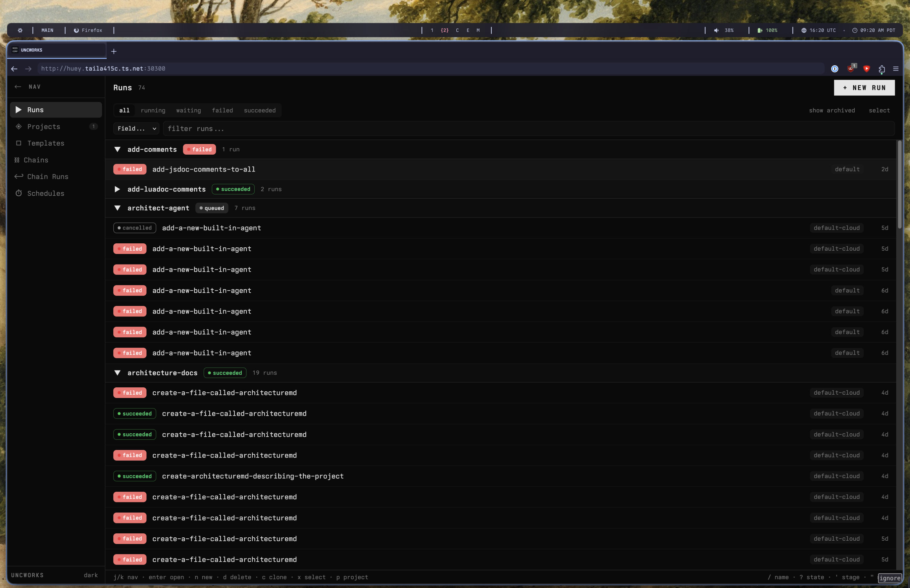
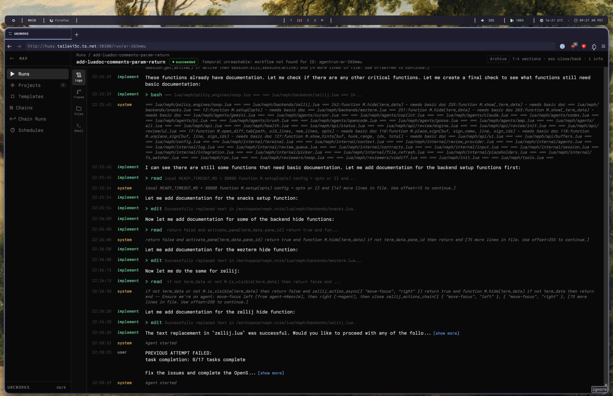
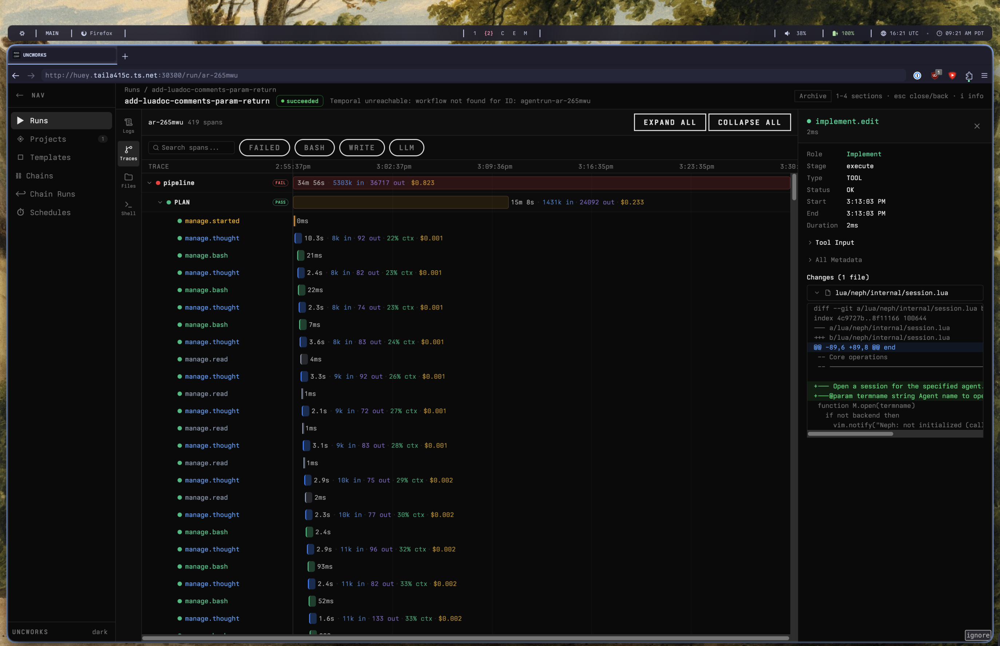
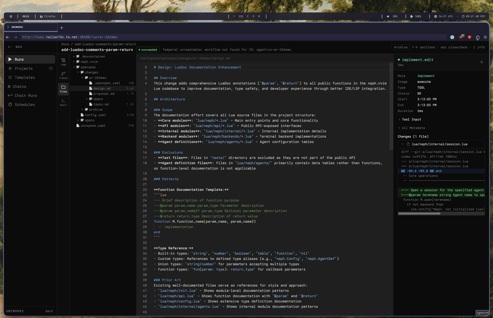
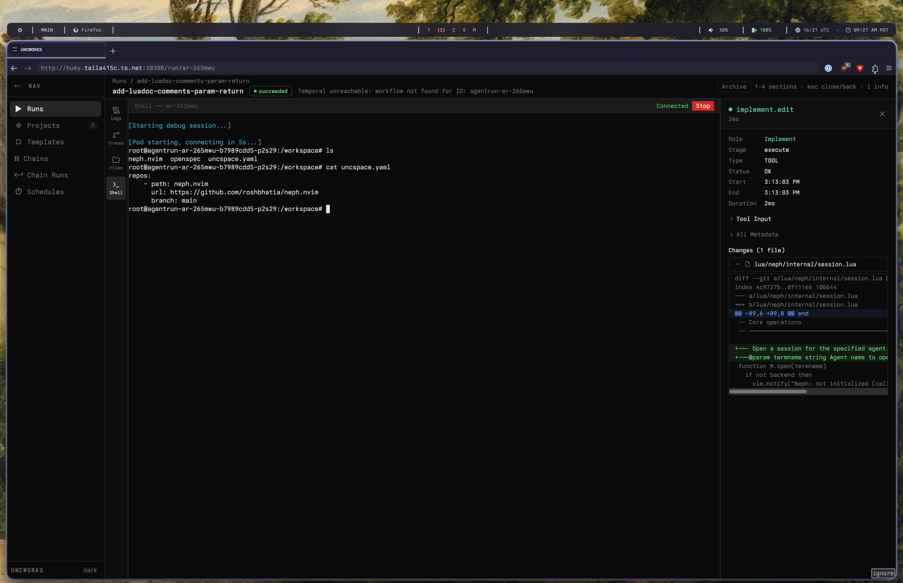

NEPHEW ORCHESTRATION
The proper abstraction for worker orchestration
Everyone wants to know, what's the proper abstraction for agentic orchestration? A sheepdog steering a flock? A bunch of good interns? A time travelling hyperintelligence bringing about its own creation? ROSSCORP has the answer: unchestration.
What is an unc? Seasoned. Old school, mostly in a cool way. Knows how to take care of business. Might have a bum knee but still knows how to dance.
What is a neph? Enthusiastic. Naive. Outnumbering local uncs ten to one. With the right guidance, should be able to make something worth holding on to.
This observation is what birthed UNCWORKS — the ultimate toolchain for uncs (software engineers) to manage swarms of nephews (AI coding agents). Write a spec, dispatch the nephews.

Run list — multiple prompts, multiple projects, all trackable
From spec to pull request in four stages
Define what needs to change with structured specs — requirements, acceptance criteria, and design constraints. Or provide a prompt and let UNCWORKS generate the spec.
Agents implement changes in isolated Kubernetes pods with full access to your repos, toolchains, and dependencies. Each run gets its own sandboxed workspace.
Five automated gates check the work against your specs, run your tests, and evaluate output with an LLM judge. Failed runs retry with failure context injected.
Approved changes are pushed to a feature branch with a PR opened and ready for human review. Standard code review process, standard git workflow.

Agent activity — interact with your nephews or let them work without you
Stop buying Mac Studios to hit APIs. Schedule nephs on your existing Kubernetes nodes. UNCWORKS deploys via Helm and runs wherever you already run production workloads.
Misconfigured MCP servers blowing up your performance? Context traces help you find token leaks. Full trace timelines, per-tool-call diffs, and verification panels with detailed pass/fail reasoning.
Use the UNC manager in a browser, a CLI, or the desktop app.

Trace timeline — every tool call, every token, every diff
What the platform provides
Manage agents plan and coordinate. Implement agents write code. Role-based restrictions keep each agent in its lane. Up to 7 parallel subtasks per run.
Each run gets its own Kubernetes pod with isolated filesystem, git worktrees, and Devbox-managed dependencies. No cross-contamination between runs.
When an agent hits ambiguity, it pauses and asks through the dashboard. You answer in real time and the agent continues. You stay in control without babysitting.
CI failures on agent-created branches are detected via webhooks. UNCWORKS extracts error context and creates fix runs automatically. Circuit breaker after 3 attempts.
Run local models via Ollama, route to cloud providers like OpenRouter, or plug in any OpenAI-compatible endpoint. Pick different models per pipeline stage — cheap for planning, capable for implementation. Budget caps in USD with fallback chains.
Past run artifacts are indexed and surfaced to future agents via vector similarity search. Your agents get smarter over time without manual curation.
Web dashboard, terminal UI, trace timeline with per-tool-call diffs, and verification panels with detailed pass/fail reasoning. Full visibility into every decision.
Feature branches, automatic PRs, multi-repo support, and webhook triggers. The output is always a standard PR ready for your normal review process.

Workspace — specs, designs, and generated code in one view
Five automated gates before any PR is opened
Did the agent address every decomposed subtask in the spec?
Do the spec artifacts conform to the expected schema?
Are all files referenced in acceptance criteria present in the workspace?
Do the test commands extracted from acceptance criteria pass?
Does an independent model judge confirm the implementation meets every acceptance criterion?

Debug shell — drop into any nephew's workspace
What teams build with UNCWORKS
Framework upgrades, ORM swaps, API pattern adoption across dozens of files. Define rules in a spec, let agents handle the transformation.
Rename shared types, update API contracts across producers and consumers, restructure module boundaries in coordinated multi-repo changes.
Point a run at a bug report. The agent analyzes the codebase, identifies root cause, writes the fix, and adds a regression test.
Service scaffolding, CRUD endpoints, data models, test harnesses. Agents read your conventions and generate code that fits in.
Full pipeline for larger features. Detailed requirements, designs, and acceptance criteria reviewed before implementation begins.
New logging requirements, updated auth patterns, dependency constraints. Encode rules in a spec, propagate changes consistently.
UNCWORKS is under active development at ROSSCORP. Kubernetes-native, self-hosted, runs in your cluster. Sign up to get notified when it's ready.
No spam. One email when we ship.